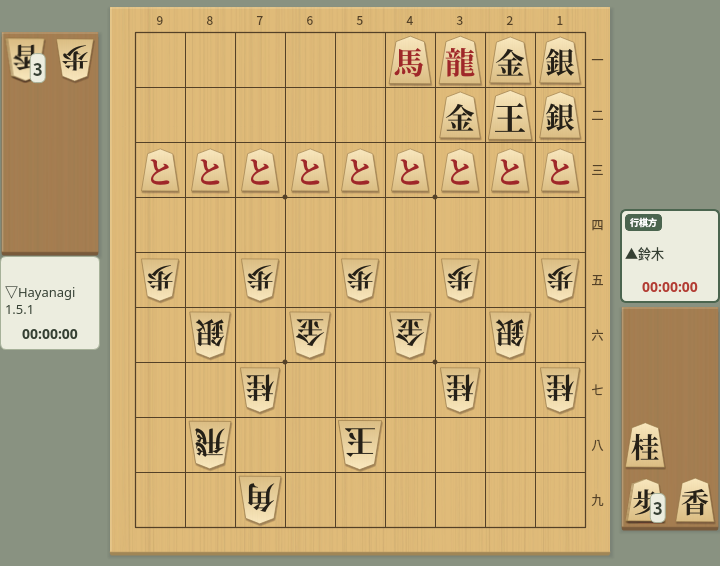
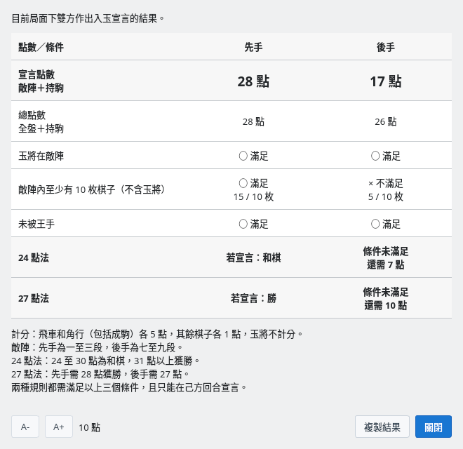
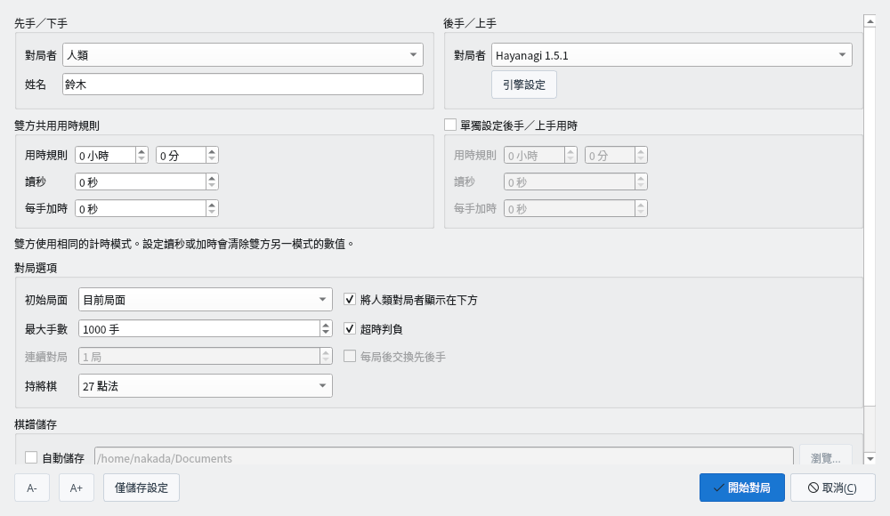
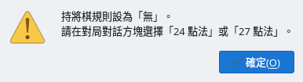
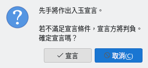
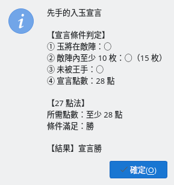
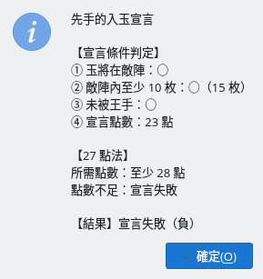
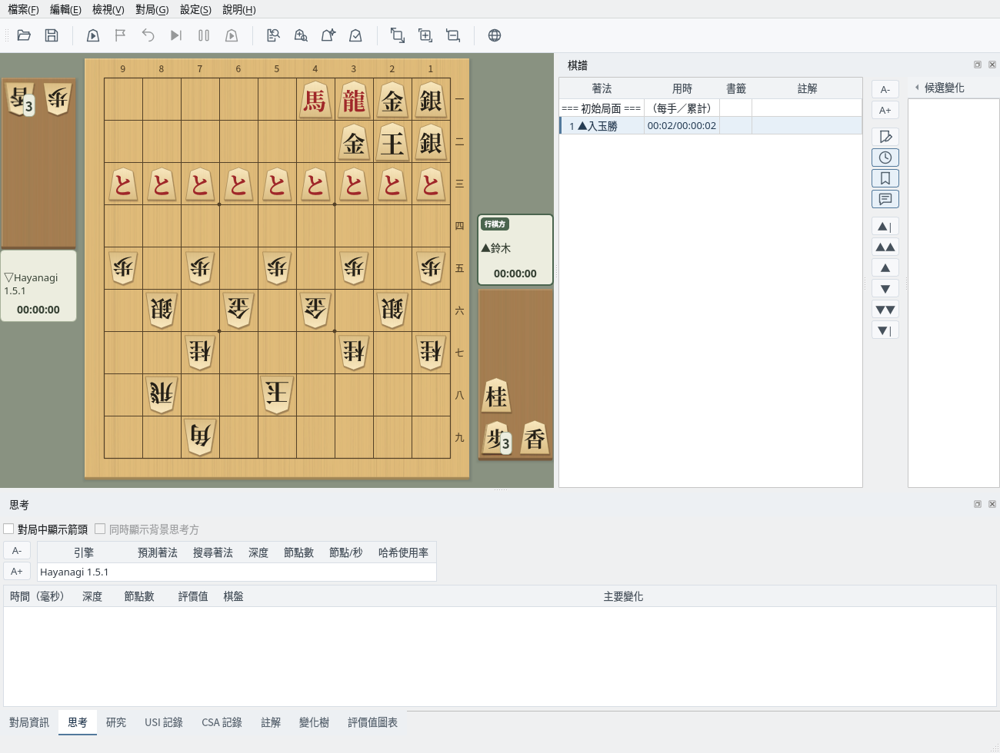

確認持將棋點數並判定入玉宣言
截圖於 Linux 上以繁體中文介面擷取。
確認目前顯示局面的點數與宣言條件
雙方的王都進入對方陣地（入玉）後，就很難透過將死取勝。在這樣的局面中，可以確認持將棋點數並進行入玉宣言。本例中先手的王在２二，後手的王已進入５八。

入玉的局面：先手在敵陣有 15 枚棋子，加上持駒共 28 點
選擇「對局」→「持將棋點數」，即可顯示在目前局面中先手、後手各自進行入玉宣言時的判定。不在對局中時也可以使用。
按一下「複製結果」可將內容複製到剪貼簿。敵陣對先手為一～三段，對後手為七～九段。

持將棋點數：先手 28 點，依 27 點法宣言勝，依 24 點法和棋；後手敵陣棋子不足，條件未滿足
在對局中輪到自己時進行入玉宣言
在可能進行入玉宣言的對局中，請在對局對話方塊的「持將棋」中選擇「24 點法」或「27 點法」。
| 24 點法 | 宣言點數 31 點以上為勝，24～30 點為和棋（持將棋） |
| 27 點法 | 先手需要 28 點以上、後手需要 27 點以上才能獲勝 |
兩種規則都需要滿足 3 個宣言條件。規則為「無」時嘗試宣言，會提示選擇規則。

對局對話方塊：在「持將棋」中選擇 24 點法或 27 點法

規則為「無」時宣言：提示在對局對話方塊中選擇規則
輪到自己時選擇「對局」→「入玉宣言」，會顯示確認，按一下「宣言」即進行宣言。不滿足宣言條件時宣言方判負，建議先用「持將棋點數」確認。
入玉宣言由人類對局者在自己的回合進行。引擎的回合無法宣言，引擎之間的對局中該選單無法使用。

入玉宣言的確認：按一下「宣言」進行宣言，按一下「取消」繼續對局
判定宣言條件並結束對局
滿足全部宣言條件時宣言勝，對局結束。結果中會顯示各條件的判定以及所用規則需要的點數。

宣言勝：滿足條件，達到 27 點法所需的 28 點
點數不足等不滿足宣言條件時宣言失敗，宣言方判負（犯規負）。依 24 點法宣言點數為 24～30 點時為「持將棋（和棋）」。

宣言失敗：27 點法需要 28 點，實際為 23 點，宣言方判負
宣言後，棋譜欄會記錄「▲入玉勝」（宣言失敗為「▲犯規負」，24 點法和棋為「▲持將棋」）。引擎進行入玉宣言時也依同一規則判定並顯示結果，不滿足條件時宣言的引擎判負（持將棋規則為「無」時依 27 點法判定）。CSA 網路對局中，宣言會傳送到伺服器，由伺服器判定。

宣言後：棋譜欄記錄「▲入玉勝」